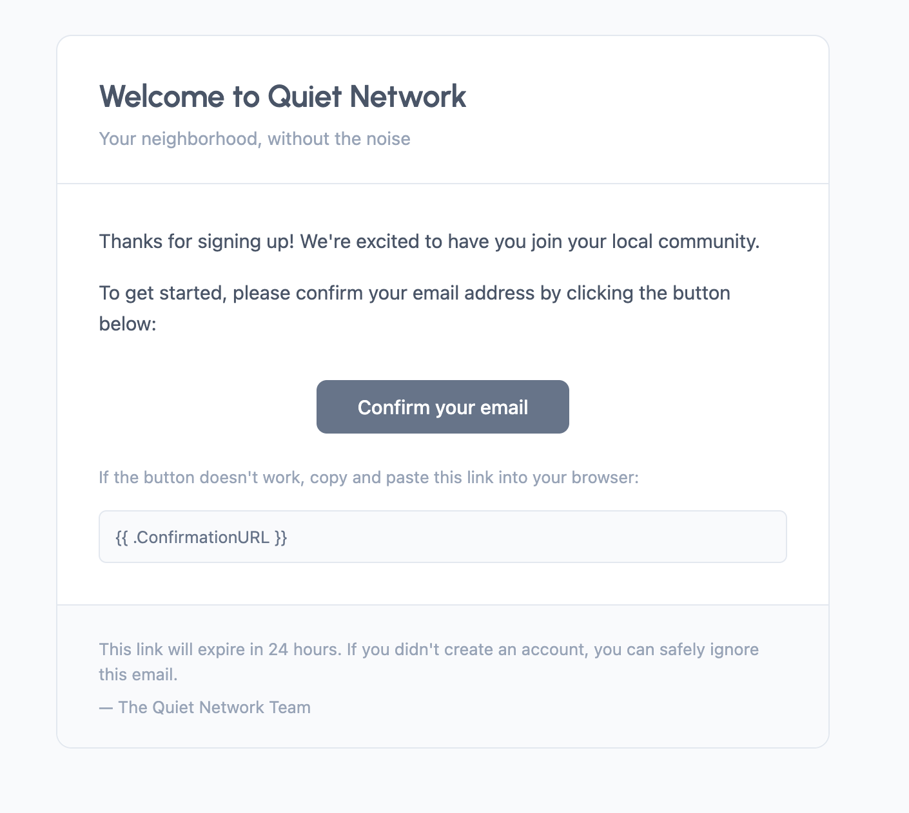
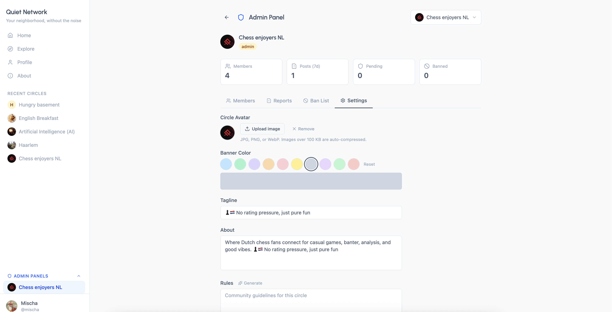

Quiet Network
Building a Minimalist Social Platform from Concept to Launch (Hobby project)

Responsibilities
Product Strategy
Development (AI-assisted)
Project Management
UX Design
Timeline
Q1 2026
Client
Personal Project
Product Strategy
Development (AI-assisted)
Project Management
UX Design
Q1 2026
Personal Project
Shipped working prototype in 8 weeks through focused scope management and modern tooling
End-to-end execution from concept sketches to deployed application with zero external dependencies
Gained knowledge in modern web stack (Supabase auth, real-time subscriptions, Vercel deployment) through hands-on building
Most social platforms today optimize for engagement through algorithmic feeds and infinite scroll. This creates addictive patterns that don't serve users' best interests.
View Demo
Build a social platform that prioritizes meaningful conversation over metrics - a return to forum-style communities where content quality matters more than virality.

As the sole product owner and developer, I handled every aspect of bringing Quiet Network to life:
Used Notion to track: Feature specifications, Technical implementation notes, and design decisions. Kept general project roadmap as .md file.


Quiet Network demonstrates my ability to take a product from concept to deployment independently - exactly the end-to-end ownership required in product management roles.